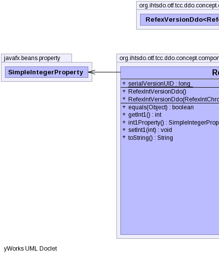
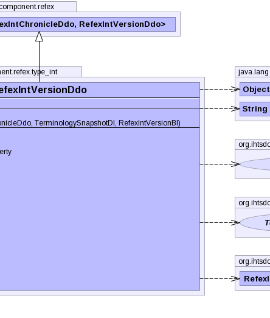
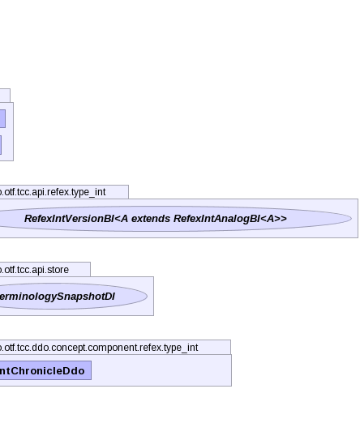

public class RefexIntVersionDdo extends RefexVersionDdo<RefexIntChronicleDdo,RefexIntVersionDdo>
|  |  |  |
| Type | Property and Description |
|---|---|
javafx.beans.property.SimpleIntegerProperty |
int1 |
authorReferenceProperty, fxTimeProperty, moduleReferenceProperty, pathReferenceProperty, statusReferenceProperty| Modifier and Type | Field and Description |
|---|---|
static long |
serialVersionUID |
chronicleunspecifiedUserUuid| Constructor and Description |
|---|
RefexIntVersionDdo() |
RefexIntVersionDdo(RefexIntChronicleDdo chronicle,
TerminologySnapshotDI ss,
RefexIntVersionBI another) |
| Modifier and Type | Method and Description |
|---|---|
boolean |
equals(Object obj)
Compares this object to the specified object.
|
int |
getInt1() |
javafx.beans.property.SimpleIntegerProperty |
int1Property() |
void |
setInt1(int intValue) |
String |
toString()
Returns a string representation of the object.
|
getComponentRef, getRefexRef, getTypeafterUnmarshal, getAdditionalIds, getAnnotations, getChronicle, getComponentNid, getConcept, getIdCount, getPrimordialComponentUuid, getUuids, getVersionCount, getVersionsauthorReferenceProperty, fxTimeProperty, getAuthorReference, getFxTime, getModuleReference, getPathReference, getStatus, getStatusString, getViewCoordinateUuid, informAboutUuid, moduleReferenceProperty, pathReferenceProperty, setAuthorReference, setFxTime, setModuleReference, setPathReference, setStatus, setStatusString, setViewCoordinateUuid, statusReferencePropertypublic static final long serialVersionUID
public RefexIntVersionDdo()
public RefexIntVersionDdo(RefexIntChronicleDdo chronicle, TerminologySnapshotDI ss, RefexIntVersionBI another) throws IOException, ContradictionException
IOExceptionContradictionExceptionpublic boolean equals(Object obj)
public javafx.beans.property.SimpleIntegerProperty int1Property()
public String toString()
toString in class VersionDdopublic int getInt1()
public void setInt1(int intValue)
Copyright © 2013 International Health Terminology Standards Development Organisation. All rights reserved.